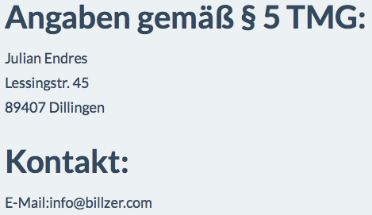

Last updated: January 15, 2015
Please read these Terms and Conditions ('Terms', 'Terms and Conditions') carefully before using the http://www.billzer.com website (the 'Service') operated by billzer ('us', 'we', or 'our').
Your access to and use of the Service is conditioned on your acceptance of and compliance with these Terms. These Terms apply to all visitors, users and others who access or use the Service.
By accessing or using the Service you agree to be bound by these Terms. If you disagree with any part of the terms then you may not access the Service.
This website uses cookies. By using this website and agreeing to these terms and conditions, you consent to our billzer's use of cookies in accordance with the terms of billzer's privacy policy / cookies policy.
Use License
Acceptable use
You must not use this website in any way that causes, or may cause, damage to the website or impairment of the availability or accessibility of the website; or in any way which is unlawful, illegal, fraudulent or harmful, or in connection with any unlawful, illegal, fraudulent or harmful purpose or activity. You must not use this website to copy, store, host, transmit, send, use, publish or distribute any material which consists of (or is linked to) any spyware, computer virus, Trojan horse, worm, keystroke logger, rootkit or other malicious computer software. You must not conduct any systematic or automated data collection activities (including without limitation scraping, data mining, data extraction and data harvesting) on or in relation to this website without billzers express written consent. You must not use this website to transmit or send unsolicited commercial communications. You must not use this website for any purposes related to marketing without billzers express written consent.
Restricted Access
Access to certain areas of this website is restricted. billzer reserves the right to restrict access to other areas of this website, or indeed this entire website, at billzers discretion. If billzer provides you with a user ID and password to enable you to access restricted areas of this website or other content or services, you must ensure that the user ID and password are kept confidential. billzer may disable your user ID and password in billzers sole discretion without notice or explanation.User Content
In these terms and conditions, your user content means material (including without limitation text, images, audio material, video material and audio-visual material) that you submit to this website, for whatever purpose. You grant to billzer a worldwide, irrevocable, non-exclusive, royalty-free license to use, reproduce, adapt, publish, translate and distribute your user content in any existing or future media. You also grant to billzer the right to sub-license these rights, and the right to bring an action for infringement of these rights. Your user content must not be illegal or unlawful, must not infringe any third party's legal rights, and must not be capable of giving rise to legal action whether against you or billzer or a third party (in each case under any applicable law). You must not submit any user content to the website that is or has ever been the subject of any threatened or actual legal proceedings or other similar complaint. billzer reserves the right to edit or remove any material submitted to this website, or stored on billzers servers, or hosted or published upon this website. Notwithstanding billzers rights under these terms and conditions in relation to user content, billzer does not undertake to monitor the submission of such content to, or the publication of such content on, this website.
Links To Other Web Sites
Our Service may contain links to third-party web sites or services that are not owned or controlled by billzer.
billzer has no control over, and assumes no responsibility for, the content, privacy policies, or practices of any third party web sites or services. You further acknowledge and agree that billzer shall not be responsible or liable, directly or indirectly, for any damage or loss caused or alleged to be caused by or in connection with use of or reliance on any such content, goods or services available on or through any such web sites or services.
We strongly advise you to read the terms and conditions and privacy policies of any third-party web sites or services that you visit.
Termination
We may terminate or suspend access to our Service immediately, without prior notice or liability, for any reason whatsoever, including without limitation if you breach the Terms.
All provisions of the Terms which by their nature should survive termination shall survive termination, including, without limitation, ownership provisions, warranty disclaimers, indemnity and limitations of liability.
Limitation of Liability
You agree that billzers entire liability, and your exclusive remedy, with respect to any service(s) provided under this Agreement and any breach of this Agreement is solely limited to the amount you paid for such service(s). billzer shall not be liable for any direct, indirect, incidental, special or consequential damages resulting from the use or inability to use any of its services or for the cost of procurement of substitute services. In no event shall billzer or its suppliers be liable for any damages (including, without limitation, damages for loss of data or profit, or due to business interruption,) arising out of the use or inability to use the materials on billzer's Internet site, even if billzer or a billzer authorized representative has been notified orally or in writing of the possibility of such damage. Because some jurisdictions do not allow limitations on implied warranties, or limitations of liability for consequential or incidental damages, these limitations may not apply to you. The materials appearing on billzer's web site could include technical, typographical, or photographic errors. billzer does not warrant that any of the materials on its web site are accurate, complete, or current. billzer may make changes to the materials contained on its web site at any time without notice. billzer does not, however, make any commitment to update the materials.
Copyrights and Trademarks
The trademarks, names, logos and service marks (collectively trademarks) displayed on this website are registered and unregistered trademarks of the website owner. Nothing contained on this website should be construed as granting any license or right to use any trademark without the prior written permission of the website owner. The written content displayed on this website is owned by its respective author and may not be reproduced in whole, or in part, without the express written permission of the author.
Disclaimer
The materials on billzer's web site are provided as is. billzer makes no warranties, expressed or implied, and hereby disclaims and negates all other warranties, including without limitation, implied warranties or conditions of merchantability, fitness for a particular purpose, or non-infringement of intellectual property or other violation of rights. Further, billzer does not warrant or make any representations concerning the accuracy, likely results, or reliability of the use of the materials on its Internet web site or otherwise relating to such materials or on any sites linked to this site.
Without prejudice to the generality of the foregoing paragraph, billzer does not warrant that: this website will be constantly available, or available at all; or the information on this website is complete, true, accurate or non-misleading. Nothing on this website constitutes, or is meant to constitute, advice of any kind. If you require advice in relation to any (legal, financial or medical) matter you should consult an appropriate professional.
Other parties
You accept that, as a limited liability entity, billzer has an interest in limiting the personal liability of its officers and employees. You agree that you will not bring any claim personally against billzers officers or employees in respect of any losses you suffer in connection with the website. Without prejudice to the foregoing paragraph, you agree that the limitations of warranties and liability set out in this website disclaimer will protect billzers officers, employees, agents, subsidiaries, successors, assigns and sub-contractors as well as billzer.
Unenforceable provisions
If any provision of this website disclaimer is, or is found to be, unenforceable under applicable law, that will not affect the enforceability of the other provisions of this website disclaimer.
Indemnity
You hereby indemnify billzer and undertake to keep billzer indemnified against any losses, damages, costs, liabilities and expenses (including without limitation legal expenses and any amounts paid by billzer to a third party in settlement of a claim or dispute on the advice of billzers legal advisers) incurred or suffered by billzer arising out of any breach by you of any provision of these terms and conditions, or arising out of any claim that you have breached any provision of these terms and conditions.
Breaches of these terms and conditions
Without prejudice to billzers other rights under these terms and conditions, if you breach these terms and conditions in any way, billzer may take such action as billzer deems appropriate to deal with the breach, including suspending your access to the website, prohibiting you from accessing the website, blocking computers using your IP address from accessing the website, contacting your internet service provider to request that they block your access to the website and/or bringing court proceedings against you.
Variation
billzer may revise these terms and conditions from time-to-time. Revised terms and conditions will apply to the use of this website from the date of the publication of the revised terms and conditions on this website. Please check this page regularly to ensure you are familiar with the current version.
Assignment
billzer may transfer, sub-contract or otherwise deal with billzers rights and/or obligations under these terms and conditions without notifying you or obtaining your consent. You may not transfer, sub-contract or otherwise deal with your rights and/or obligations under these terms and conditions.
Severability
If a provision of these terms and conditions is determined by any court or other competent authority to be unlawful and/or unenforceable, the other provisions will continue in effect. If any unlawful and/or unenforceable provision would be lawful or enforceable if part of it were deleted, that part will be deemed to be deleted, and the rest of the provision will continue in effect.
Entire agreement
These terms and conditions and the privacy policy constitute the entire agreement between you and billzer in relation to your use of this website, and supersede all previous agreements in respect of your use of this website.
Governing Law
These Terms shall be governed and construed in accordance with the laws of Bavaria, Germany, without regard to its conflict of law provisions.
Our failure to enforce any right or provision of these Terms will not be considered a waiver of those rights. If any provision of these Terms is held to be invalid or unenforceable by a court, the remaining provisions of these Terms will remain in effect. These Terms constitute the entire agreement between us regarding our Service, and supersede and replace any prior agreements we might have between us regarding the Service.
Changes
We reserve the right, at our sole discretion, to modify or replace these Terms at any time. If a revision is material we will try to provide at least 30 days notice prior to any new terms taking effect. What constitutes a material change will be determined at our sole discretion.
By continuing to access or use our Service after those revisions become effective, you agree to be bound by the revised terms. If you do not agree to the new terms, please stop using the Service.
Created with permission from TermsFeed Generator and this document was created using a Contractology template available at http://www.freenetlaw.com.
Contact Us
If you have any questions about these Terms, please contact us over the contact data in the imprint.
This Privacy Policy clarifies the nature, scope and purpose of the processing of personal data (hereinafter referred to as 'Data') within our online offering and the related websites, features and content, as well as external online presence, e.g. our Social Media Profile (collectively referred to as the 'Online Offering'). With regard to the terminology used, e.g. 'Processing'or 'Responsible', we refer to the definitions in Article 4 of the General Data Protection Regulation (GDPR).

The use of our website is usually possible without providing personal information. As far as on our sides personal data (for example name, address or eMail addresses) are raised, this takes place, as far as possible, always on voluntary basis. These data will not be disclosed to third parties without your explicit consent.
We point out that data transmission over the Internet (for example, when communicating via e-mail) may have security vulnerabilities. A complete protection of the data from access by third parties is not possible.
The use of contact information published by third parties for the purpose of sending unsolicited advertising and information materials is hereby expressly excluded. The operators of the pages expressly reserve the right to take legal action in the event of the unsolicited sending of advertising information, such as spam e-mails.
Visitors and users of the online offer (in the following we refer to the affected persons as 'users')
- Providing the online offering, its features and content.
- Answering contact requests and communicating with users.
- Safety measures
- Audience measurement / Marketing
Where billzer discloses your personal information with your consent, the agent or subcontractor will be required to to use this personal information in accordance with the terms of this Privacy Policy. Billzer may disclose your personal information to the extent necessary and as required by law, in connection with legal proceedings or disclose potential litigation. We will only retain personal information for as long as necessary for the purposes of our service. We will provide personal information, with appropriate security measures against loss or theft, as well as unauthorized access, disclosure, copying, Protect use or modification. In case of a possible transfer of the billzers property, all data collected up to that time will be given to the new owner.
'Personal data' means any information relating to an identified or identifiable natural person ('the person concerned'); a natural person is considered as identifiable, which can be identified directly or indirectly, in particular by means of assignment to an identifier such as a name, to an identification number, to location data, to an online identifier (eg cookie) or to one or more special features, are the expression of the physical, physiological, genetic, mental, economic, cultural or social identity of this natural person
'Processing' means any process performed with or without the aid of automated procedures or any such process associated with personal data. The term covers a wide range and covers practically every handling of data.
'Pseudonymisation' means the processing of personal data in such a way that the personal data can no longer be assigned to a specific data subject without additional information being provided, provided that such additional information is kept separate and subject to technical and organizational measures to ensure that the personal data not assigned to an identified or identifiable natural person.
'Profiling' means any kind of automated processing of personal data which involves the use of such personal data to evaluate certain personal aspects relating to a natural person, in particular aspects relating to job performance, economic situation, health, personal To analyze or predict preferences, interests, reliability, behavior or location of this natural person.
'Responsible' means the natural or legal person, public authority, agency or other body that alone or together with others decides on the purposes and means of processing personal data
'Processor' means a natural or legal person, public authority, body or body that processes personal data on behalf of the controller.
In accordance with Art. 13 GDPR, we inform you about the legal basis of our data processing. Unless the legal basis in the data protection declaration is mentioned, the following applies: The legal basis for obtaining consent is Article 6 (1) lit. a and Art. 7 GDPR, the legal basis for the processing for the performance of our services and the execution of contractual measures as well as the response to inquiries is Art. 6 (1) lit. b GDPR, the legal basis for processing in order to fulfill our legal obligations is Art. 6 (1) lit. c GDPR, and the legal basis for processing in order to safeguard our legitimate interests is Article 6 (1) lit. f GDPR. In the event that vital interests of the data subject or another natural person require the processing of personal data, Art. 6 para. 1 lit. d GDPR as legal basis.
In accordance with Art. 32 GDPR, we take into account the state of the art, the implementation costs and the type the scope, circumstances and purposes of the processing and the different likelihood and severity of the risk to the rights and freedoms of natural persons; appropriate technical and organizational measures to ensure a level of protection commensurate with the risk
Measures include, in particular, ensuring the confidentiality, integrity and availability of data by controlling physical access to the data, as well as their access, input, disclosure, availability and separation. We have also set up procedures to ensure the enjoyment of data subject rights, data deletion and data vulnerability. Furthermore, we consider the protection of personal data already in the development or selection of hardware, software and procedures, according to the principle of data protection through technology design and privacy-friendly default settings (Article 25 GDPR)
If, in the course of our processing, we disclose data to other individuals and companies (contract processors or third parties) to them transmit or otherwise grant access to the data, this is only on the basis of a legal permission (eg, if a transmission of the data to third parties, such as to payment service providers, in accordance with Art. 6 para. 1 lit. b GDPR required to fulfill the contract), You have consented to a legal obligation or on the basis of our legitimate interests (eg the use of agents, web hosts, etc.).
If we commission third parties to process data on the basis of a so-called 'contract processing contract', this is done on the basis of Art. 28 GDPR.
If we process data in a third country (ie outside the European Union (EU) or the European Economic Area (EEA)) or if this is done in the context of the use of third party services or disclosure, or transmission of data to third parties this only if it is to fulfill our (pre) contractual obligations, on the basis of your consent, on the basis of a legal obligation or on the basis of our legitimate interests. Subject to legal or contractual permissions, we process or have the data processed in a third country only in the presence of the special conditions of Art. 44 et seq. GDPR. That the processing is e.g. on the basis of specific guarantees, such as the officially recognized level of data protection (eg for the USA through the Privacy Shield) or compliance with officially recognized special contractual obligations (so - called 'standard contractual clauses').
You have the right to ask for confirmation as to whether such data is being processed and for information about such data and for further information and copying of the data accordingly Art. 15 GDPR.
You have accordingly Art. 16 GDPR the right to demand the completion of the data concerning you or the correction of the incorrect data concerning you.
In accordance with Art. 17 GDPR, they have the right to demand that the relevant data be deleted without delay, or alternatively to demand a restriction of the processing of data in accordance with Art. 18 GDPR
You have the right to demand that the data relating to you, which you have provided to us, be obtained in accordance with Art. 20 GDPR and request their transmission to other persons responsible.
You have according to Art. 77 GDPR the right to file a complaint with the competent supervisory authority.
You have the right to revoke consent in accordance with Art. Revoke Article 7 (3) of the GDPR with effect for the future
You may, in accordance with the provisions of the Art. 21 GDPR contradict at any time. The objection may in particular be made against processing for direct marketing purposes.
'Cookies'are small files, which are stored on users'computers. Different information can be stored within the cookies. A cookie is primarily used to store the information about a user (or the device on which the cookie is stored) during or after his visit to an online offer. Temporary cookies, or 'session cookies'or 'transient cookies', are cookies that are deleted after a user leaves an online service and closes his browser. In such a cookie, e.g. the contents of a shopping cart in an online shop or a login status are saved. The term 'permanent'or 'persistent'refers to cookies that remain stored even after the browser has been closed. Thus, e.g. the login status will be saved if users visit it after several days. Likewise, in such a cookie the interests of the users can be stored, which are used for range measurement or marketing purposes. A 'third-party cookie'refers to cookies offered by providers other than the person responsible for the online offer (otherwise, if only its cookies are called 'first-party cookies')
We can use temporary and permanent cookies and clarify this in the context of our privacy policy.
If users do not want cookies stored on their computer, they will be asked to disable the option in their browser's system settings. Saved cookies can be deleted in the system settings of the browser. The exclusion of cookies can lead to functional restrictions of this online offer.
A general objection to the use of cookies used for online marketing purposes can be found on the US side of a variety of services, especially in the case of tracking http://www.aboutads.info/choices/ or the EU page http://www.youronlinechoices.com/ be explained. Furthermore, the storage of cookies can be achieved by switching them off in the settings of the browser. Please note that you may not be able to use all features of this online offer.
The data processed by us will be processed as specified Articles 17 and 18 GDPR are deleted or restricted in their processing. Unless explicitly stated in this privacy policy, the data stored by us are deleted as soon as they are no longer required for their purpose and the deletion does not conflict with any statutory storage requirements. Unless the data is deleted because it is required for other and legitimate purposes, its processing will be restricted. That The data is blocked and not processed for other purposes. This applies, for example for data that needs to be kept for commercial or tax reasons.
According to legal requirements in Germany, the storage takes place in particular for 10 years according to §§ 147 Abs. 1 AO, 257 Abs. 1 Nr. 1 and 4, Abs. 4 HGB (books, records, management reports, accounting documents, trading books, relevant for taxation Documents, etc.) and 6 years in accordance with § 257 (1) no. 2 and 3, para. 4 HGB (commercial letters).
According to legal regulations in Austria the storage takes place especially for 7 years according to § 132 paragraph 1 BAO (accounting documents, receipts / invoices, accounts, receipts, business papers, statement of income and expenses, etc.), for 22 years in connection with real estate and for 10 years in the case of documents related to electronically supplied services, telecommunications, broadcasting and television services provided to non-EU companies in EU Member States for which the Mini-One-Stop-Shop (MOSS) is used.
We use the privacy-protected 'Shariff'buttons. 'Shariff'is designed to allow more privacy on the web and replace the usual social network share buttons. In this case, not the user's browser but the server on which this online offer is located establishes a connection to the server of the respective social media platforms and asks, for example, the number of likes, etc. The user remains anonymous. More information about the Shariff project can be found at the developers of c't magazine: www.ct.de .
Created with Datenschutz-Generator.de by RA Dr. med. Thomas SchwenkeContact Us
If you have any questions about this Privacy Policy, please contact us. Contact information can be found in the imprint.